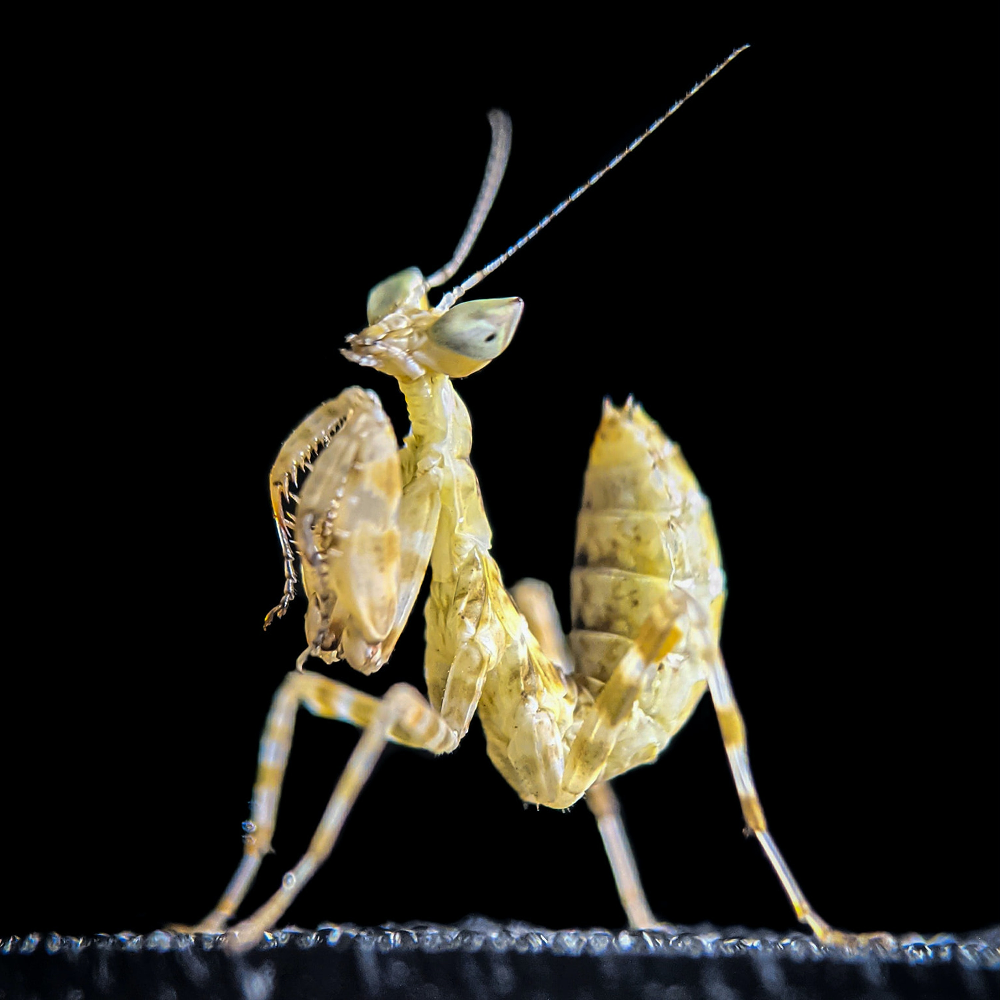

Welcome to the mantispedia
This is a page where are catologated some species of mantis and there living zone.

Enlace a wikipedia
End of page
Species
- Mantis macroalata
- Mantis macroalata fronticus
- Mantis macroalata humilis
- Mantis beieri
- Mantis emortualis Saussure

Living zones
- Europe
- Spain
- Portugal
- Italy
- Asia
- North Africa
Thank U for use the mantispedia
Creator